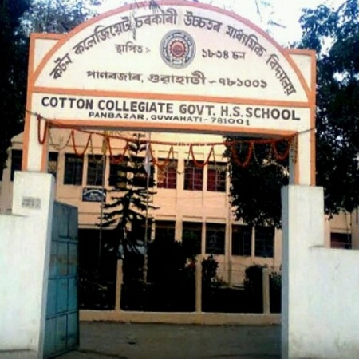
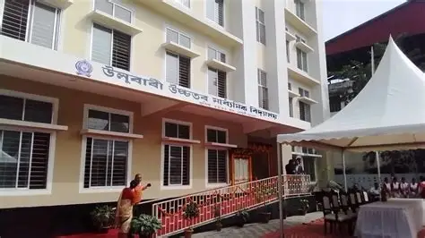

School Snapshot
- Name: Cotton Collegiate Govt. H.S. School
- Established: 1835
- Location: Panbazar, Guwahati - 781001, Assam, India
- Tagline: Bridging Three Centuries of Excellence

From the earliest foundations of secondary education in Assam to a modern urban campus, Cotton Collegiate has sustained a long tradition of scholarship.
In Assam, secondary education was launched in 1834. Capt. Francis Jenkins, commissioner of Assam (1834-61), coordinated early structural measures to provide instruction for Assamese youth. Formal approvals came in 1835 through East India Company administration, with an initial enrollment of 58 students under Headmaster Mr. Singer.
Across the late nineteenth and early twentieth centuries, the institution evolved through major transformations, was raised to Collegiate tier in 1865, and established its enduring identity as Cotton Collegiate School. Today, the school remains centrally located in Panbazar, Guwahati, bridging three centuries of academic heritage.

Read the Association's vision, mission, and objective areas shaping alumni engagement and social contribution.
Go to Vision and Mission